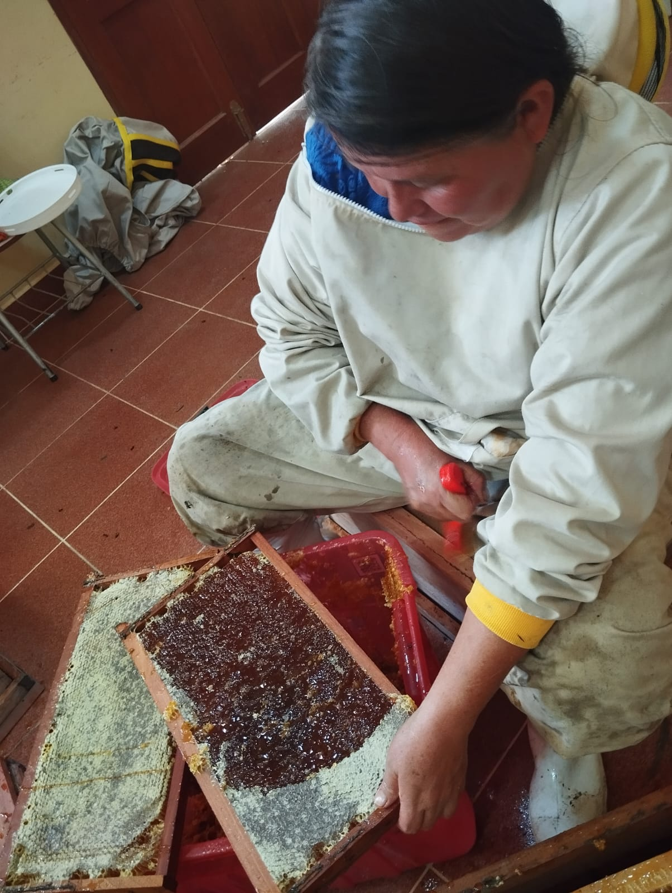
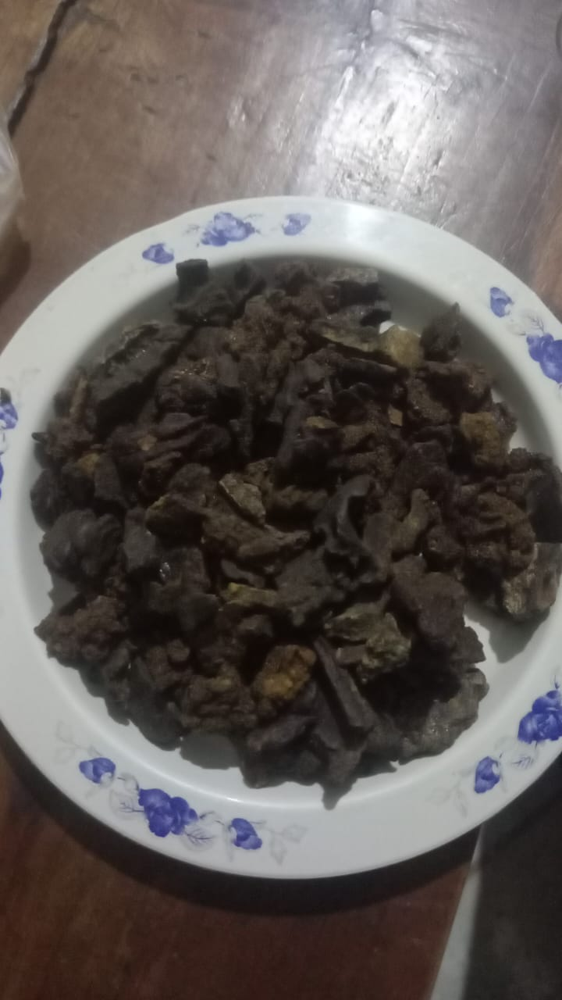
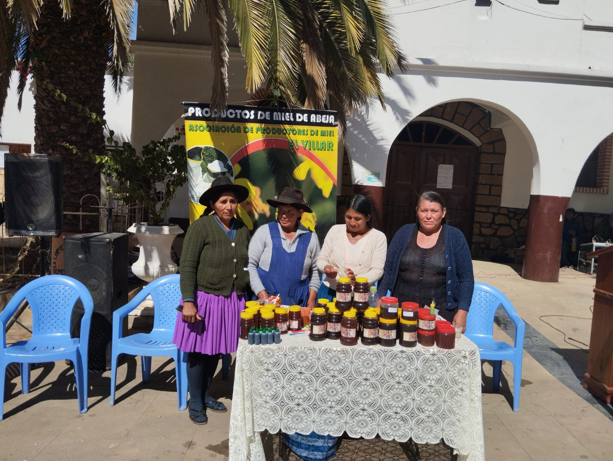

NOVEDADES
DESCUBRIMIENTO
El propóleo verde fue descubierto en el año 2022 por la socia apicultora sra Ana Rodas en la comunidad de Nogales sector Yacutoklla,en este sector abunda la planta de molle y picana o thola (Baccharis dracunculifolia), es conocido por sus propiedades antiinflamantorias, antiulcerosas y antioxidantes. Producto de la floración de estas plantas las abejas de raza caocástica reañiza la recolección de resina del las plantas mencionadas teniendo como resultado final el propóleo verde, cabe mencionar que las plantas de molle y la thola crecen en las alturas y no en los valles.



FERIA PRODUCTIVA
El 19 de julio de la presente gestión se tuvo la visita del gerente de línea apícola Lio Filizados, Stebia y Granos, licenciado Bernardino huallpa Chura, quien estuvo presente en la feria productiva del municipio de El Villar para destacar el estudio del propóleo verde.